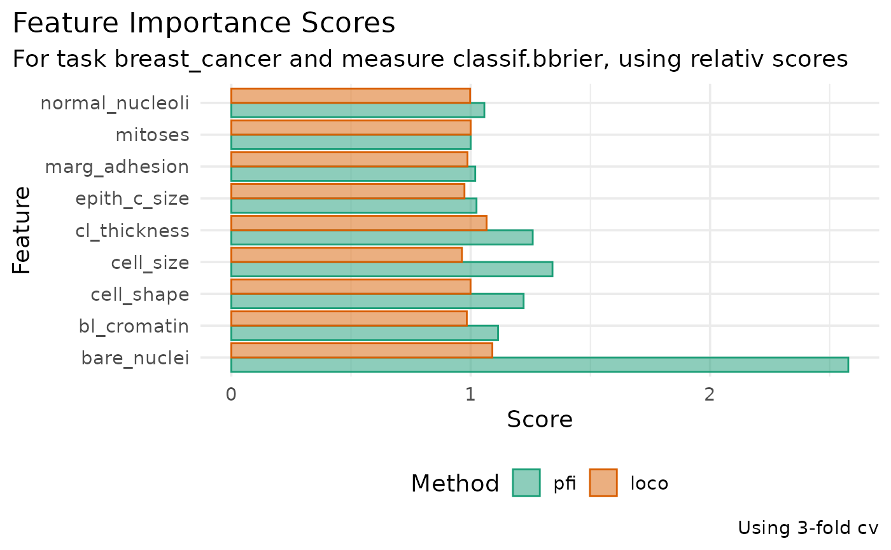

Defining a simple example case:
- German credit classification task
- Random forests with 100 trees
- Holdout split (TBI)
- Measure: Classification error
task = tsk("german_credit")
learner = lrn("classif.ranger", num.trees = 500)
measure = msr("classif.ce")PFI
Simple case without resampling
Default behavior will internally construct standard holdout resampling with default ratio
Calculating PFI:
pfi = PFI$new(
task = task,
learner = learner,
measure = measure
)
# Stores parameter set to calculate PFI in different ways
pfi$param_set
#> <ParamSet(2)>
#> id class lower upper nlevels default value
#> <char> <char> <num> <num> <num> <list> <list>
#> 1: relation ParamFct NA NA 2 difference difference
#> 2: iters_perm ParamInt 1 Inf Inf 1 1
set.seed(123)
# Default behavior should be sane
pfi$compute()
#> Key: <feature>
#> feature importance
#> <char> <num>
#> 1: age 0.009009009
#> 2: amount 0.015015015
#> 3: credit_history 0.003003003
#> 4: duration 0.021021021
#> 5: employment_duration 0.000000000
#> 6: foreign_worker 0.006006006
#> 7: housing 0.018018018
#> 8: installment_rate 0.033033033
#> 9: job -0.009009009
#> 10: number_credits 0.003003003
#> 11: other_debtors -0.006006006
#> 12: other_installment_plans 0.003003003
#> 13: people_liable -0.003003003
#> 14: personal_status_sex 0.012012012
#> 15: present_residence 0.000000000
#> 16: property 0.006006006
#> 17: purpose -0.003003003
#> 18: savings 0.009009009
#> 19: status 0.036036036
#> 20: telephone 0.009009009
#> feature importanceQ: Should $compute() be run on construction? Between the
call to $new() and $compute() there’s nothing
that needs to happen technically, as long as the relation
param could be set directly.
Does not recompute if not needed:
pfi$compute(relation = "difference")
#> Key: <feature>
#> feature importance
#> <char> <num>
#> 1: age 0.009009009
#> 2: amount 0.015015015
#> 3: credit_history 0.003003003
#> 4: duration 0.021021021
#> 5: employment_duration 0.000000000
#> 6: foreign_worker 0.006006006
#> 7: housing 0.018018018
#> 8: installment_rate 0.033033033
#> 9: job -0.009009009
#> 10: number_credits 0.003003003
#> 11: other_debtors -0.006006006
#> 12: other_installment_plans 0.003003003
#> 13: people_liable -0.003003003
#> 14: personal_status_sex 0.012012012
#> 15: present_residence 0.000000000
#> 16: property 0.006006006
#> 17: purpose -0.003003003
#> 18: savings 0.009009009
#> 19: status 0.036036036
#> 20: telephone 0.009009009
#> feature importanceRecomputes if param changes, stores new param
pfi$compute(relation = "ratio")
#> Key: <feature>
#> feature importance
#> <char> <num>
#> 1: age 1.0574713
#> 2: amount 1.0344828
#> 3: credit_history 1.0919540
#> 4: duration 1.0689655
#> 5: employment_duration 1.0114943
#> 6: foreign_worker 1.0000000
#> 7: housing 1.0344828
#> 8: installment_rate 1.0459770
#> 9: job 0.9655172
#> 10: number_credits 0.9655172
#> 11: other_debtors 1.0114943
#> 12: other_installment_plans 1.0114943
#> 13: people_liable 1.0229885
#> 14: personal_status_sex 1.0229885
#> 15: present_residence 1.0000000
#> 16: property 1.0344828
#> 17: purpose 1.0114943
#> 18: savings 1.0344828
#> 19: status 1.1149425
#> 20: telephone 1.0114943
#> feature importance
pfi$param_set
#> <ParamSet(2)>
#> id class lower upper nlevels default value
#> <char> <char> <num> <num> <num> <list> <list>
#> 1: relation ParamFct NA NA 2 difference ratio
#> 2: iters_perm ParamInt 1 Inf Inf 1 1Q: When $compute() is called again its default value for
"relation" (i.e. "difference") is used, which
doesn’t seem ideal. Maybe this default should be the param stored in the
object itself rather than feel like a separate function.
pfi$compute()
#> Key: <feature>
#> feature importance
#> <char> <num>
#> 1: age 0.015015015
#> 2: amount -0.012012012
#> 3: credit_history 0.000000000
#> 4: duration 0.057057057
#> 5: employment_duration -0.012012012
#> 6: foreign_worker -0.003003003
#> 7: housing -0.003003003
#> 8: installment_rate 0.009009009
#> 9: job -0.003003003
#> 10: number_credits -0.006006006
#> 11: other_debtors -0.006006006
#> 12: other_installment_plans -0.012012012
#> 13: people_liable -0.006006006
#> 14: personal_status_sex 0.006006006
#> 15: present_residence -0.009009009
#> 16: property -0.003003003
#> 17: purpose -0.024024024
#> 18: savings 0.027027027
#> 19: status 0.021021021
#> 20: telephone -0.003003003
#> feature importanceRetrieve scores and convert to DT:
pfi$importance
#> Key: <feature>
#> feature importance
#> <char> <num>
#> 1: age 0.015015015
#> 2: amount -0.012012012
#> 3: credit_history 0.000000000
#> 4: duration 0.057057057
#> 5: employment_duration -0.012012012
#> 6: foreign_worker -0.003003003
#> 7: housing -0.003003003
#> 8: installment_rate 0.009009009
#> 9: job -0.003003003
#> 10: number_credits -0.006006006
#> 11: other_debtors -0.006006006
#> 12: other_installment_plans -0.012012012
#> 13: people_liable -0.006006006
#> 14: personal_status_sex 0.006006006
#> 15: present_residence -0.009009009
#> 16: property -0.003003003
#> 17: purpose -0.024024024
#> 18: savings 0.027027027
#> 19: status 0.021021021
#> 20: telephone -0.003003003
#> feature importance
as.data.table(pfi)
#> Warning in as.data.table.FeatureImportanceLearner(pfi): No importance scores
#> found. Did you $compute()?
#> Empty data.table (0 rows and 2 cols): feature,importanceWith resampling
learner = lrn("classif.ranger", num.trees = 100)
resampling = rsmp("cv", folds = 3)
measure = msr("classif.ce")
pfi = PFI$new(
task = task,
learner = learner,
resampling = resampling,
measure = measure
)
pfi$resampling
#> <ResamplingCV>: Cross-Validation
#> * Iterations: 3
#> * Instantiated: TRUE
#> * Parameters: folds=3
pfi$resample_result
#> NULL
pfi$compute(relation = "difference")
#> Key: <feature>
#> feature importance
#> <char> <num>
#> 1: age 0.004996014
#> 2: amount 0.016007025
#> 3: credit_history 0.028004052
#> 4: duration 0.021995049
#> 5: employment_duration 0.004004004
#> 6: foreign_worker 0.001001001
#> 7: housing 0.007993023
#> 8: installment_rate 0.013990038
#> 9: job 0.003000006
#> 10: number_credits 0.000000000
#> 11: other_debtors 0.003995013
#> 12: other_installment_plans 0.009998022
#> 13: people_liable 0.001996008
#> 14: personal_status_sex 0.003998010
#> 15: present_residence 0.005997015
#> 16: property 0.012989037
#> 17: purpose 0.011002020
#> 18: savings 0.027989067
#> 19: status 0.042995091
#> 20: telephone 0.007004010
#> feature importance
pfi$resample_result
#> <ResampleResult> with 3 resampling iterations
#> task_id learner_id resampling_id iteration prediction_test
#> german_credit classif.ranger cv 1 <PredictionClassif>
#> german_credit classif.ranger cv 2 <PredictionClassif>
#> german_credit classif.ranger cv 3 <PredictionClassif>
#> warnings errors
#> 0 0
#> 0 0
#> 0 0
pfi$importance
#> Key: <feature>
#> feature importance
#> <char> <num>
#> 1: age 0.004996014
#> 2: amount 0.016007025
#> 3: credit_history 0.028004052
#> 4: duration 0.021995049
#> 5: employment_duration 0.004004004
#> 6: foreign_worker 0.001001001
#> 7: housing 0.007993023
#> 8: installment_rate 0.013990038
#> 9: job 0.003000006
#> 10: number_credits 0.000000000
#> 11: other_debtors 0.003995013
#> 12: other_installment_plans 0.009998022
#> 13: people_liable 0.001996008
#> 14: personal_status_sex 0.003998010
#> 15: present_residence 0.005997015
#> 16: property 0.012989037
#> 17: purpose 0.011002020
#> 18: savings 0.027989067
#> 19: status 0.042995091
#> 20: telephone 0.007004010
#> feature importanceDifferent measure:
Q: Maybe it would be worth allowing to change measure post-hoc?
learner$predict_type = "prob"
pfi = PFI$new(
task = task,
learner = learner,
resampling = resampling,
measure = msr("classif.auc")
)
pfi$compute(relation = "ratio")
#> Key: <feature>
#> feature importance
#> <char> <num>
#> 1: age 1.0119854
#> 2: amount 1.0182071
#> 3: credit_history 1.0261672
#> 4: duration 1.0391916
#> 5: employment_duration 1.0176308
#> 6: foreign_worker 1.0006448
#> 7: housing 1.0050683
#> 8: installment_rate 0.9996105
#> 9: job 0.9996705
#> 10: number_credits 1.0012332
#> 11: other_debtors 1.0040648
#> 12: other_installment_plans 1.0097691
#> 13: people_liable 0.9996198
#> 14: personal_status_sex 1.0010624
#> 15: present_residence 0.9972150
#> 16: property 1.0104244
#> 17: purpose 1.0087439
#> 18: savings 1.0273154
#> 19: status 1.1509158
#> 20: telephone 1.0025541
#> feature importance
pfi$compute(relation = "difference")
#> Key: <feature>
#> feature importance
#> <char> <num>
#> 1: age 1.219438e-02
#> 2: amount 7.990804e-04
#> 3: credit_history 1.942118e-02
#> 4: duration 3.469820e-02
#> 5: employment_duration 7.473255e-03
#> 6: foreign_worker 6.846385e-04
#> 7: housing 2.851689e-03
#> 8: installment_rate 3.310377e-03
#> 9: job -4.428262e-04
#> 10: number_credits -1.266753e-03
#> 11: other_debtors 6.770134e-03
#> 12: other_installment_plans 8.964666e-03
#> 13: people_liable 1.633042e-03
#> 14: personal_status_sex 2.295840e-03
#> 15: present_residence 6.110152e-05
#> 16: property 1.331438e-03
#> 17: purpose 4.640028e-03
#> 18: savings 7.728800e-03
#> 19: status 1.171140e-01
#> 20: telephone 2.073551e-03
#> feature importanceQ: Results are importance scores averaged over resampling iterations
to ensure the “named numeric” return format. But what about the
individual scores across resampling iterations?
If we want to attempt uncertainty quantification or at least also report
SDs there needs to be a data.table return type.
With multiple permutation iterations
pfi = PFI$new(
task = task,
learner = learner,
resampling = resampling,
measure = msr("classif.ce"),
iters_perm = 5 # permute each feature 5 times in each resampling iteration
)
pfi$compute()
#> Key: <feature>
#> feature importance
#> <char> <num>
#> 1: age -2.997009e-06
#> 2: amount 1.379643e-02
#> 3: credit_history 1.678625e-02
#> 4: duration 2.720145e-02
#> 5: employment_duration 6.389024e-03
#> 6: foreign_worker 4.004004e-04
#> 7: housing 1.924080e-04
#> 8: installment_rate 9.191827e-03
#> 9: job 1.393609e-03
#> 10: number_credits -2.043960e-04
#> 11: other_debtors 6.600613e-03
#> 12: other_installment_plans 1.190412e-03
#> 13: people_liable 2.601404e-03
#> 14: personal_status_sex -3.007798e-03
#> 15: present_residence -1.802401e-03
#> 16: property 7.930086e-04
#> 17: purpose 4.795214e-03
#> 18: savings 1.160262e-02
#> 19: status 4.579550e-02
#> 20: telephone 1.002200e-03
#> feature importanceLOCO
Same setup but now using LOCO, which differs in that it internally
needs to refit the model.
Notably, the Task object does not need to be modified, as
it suffices to adjust the .$col_roles$feature property.
learner = lrn("classif.ranger", num.trees = 100)
loco = LOCO$new(
task = task,
learner = learner,
resampling = resampling,
measure = msr("classif.ce")
)
loco$compute()
#> age amount credit_history
#> 3.977031e-03 4.001007e-03 2.982024e-03
#> duration employment_duration foreign_worker
#> -1.003998e-03 2.982024e-03 6.986028e-03
#> housing installment_rate job
#> -3.014991e-03 -5.005005e-03 -7.024989e-03
#> number_credits other_debtors other_installment_plans
#> -7.015998e-03 -3.596411e-05 -9.023994e-03
#> people_liable personal_status_sex present_residence
#> 9.830189e-04 -2.022981e-03 9.770249e-04
#> property purpose savings
#> -8.019996e-03 1.981023e-03 2.994012e-03
#> status telephone
#> 1.899504e-02 -3.008997e-03Aggregating results
scores_rel = data.table(
feature = task$feature_names,
PFI = pfi$compute(relation = "ratio"),
LOCO = loco$compute(relation = "ratio")
)
scores_rel |>
knitr::kable(digits = 4, caption = "Importance scores (ratio)")| feature | PFI.feature | PFI.importance | LOCO |
|---|---|---|---|
| age | age | 1.0058 | 1.0066 |
| amount | amount | 1.0366 | 1.0449 |
| credit_history | credit_history | 1.0558 | 1.0470 |
| duration | duration | 1.1008 | 1.0379 |
| employment_duration | employment_duration | 1.0156 | 0.9822 |
| foreign_worker | foreign_worker | 0.9935 | 0.9950 |
| housing | housing | 0.9996 | 0.9726 |
| installment_rate | installment_rate | 1.0197 | 1.0254 |
| job | job | 0.9889 | 0.9829 |
| number_credits | number_credits | 1.0063 | 1.0002 |
| other_debtors | other_debtors | 1.0051 | 0.9674 |
| other_installment_plans | other_installment_plans | 1.0015 | 0.9872 |
| people_liable | people_liable | 0.9899 | 0.9623 |
| personal_status_sex | personal_status_sex | 1.0054 | 0.9987 |
| present_residence | present_residence | 1.0097 | 1.0235 |
| property | property | 1.0061 | 1.0253 |
| purpose | purpose | 1.0251 | 0.9991 |
| savings | savings | 1.0528 | 1.0196 |
| status | status | 1.2157 | 1.1075 |
| telephone | telephone | 1.0271 | 1.0118 |
library(ggplot2)
scores_rel |>
data.table::melt(id.vars = "feature", value.name = "score", variable.name = "method") |>
ggplot(aes(x = score, y = feature, color = method, fill = method)) +
geom_col(position = "dodge", alpha = .5) +
scale_color_brewer(palette = "Dark2", aesthetics = c("color", "fill")) +
labs(
title = "Feature Importance Scores",
subtitle = sprintf("For task %s and measure %s, using relativ scores", task$id, measure$id),
x = "Score", y = "Feature", color = "Method", fill = "Method",
caption = sprintf("Using %i-fold $s", resampling$iters, resampling$id)
) +
theme(
legend.position = "bottom",
plot.title.position = "plot"
)
#> Warning in melt.data.table(scores_rel, id.vars = "feature", value.name =
#> "score", : 'measure.vars' [PFI.feature, PFI.importance, LOCO] are not all of
#> the same type. By order of hierarchy, the molten data value column will be of
#> type 'character'. All measure variables not of type 'character' will be coerced
#> too. Check DETAILS in ?melt.data.table for more on coercion.
#> Warning in sprintf("Using %i-fold $s", resampling$iters, resampling$id): one
#> argument not used by format 'Using %i-fold $s'